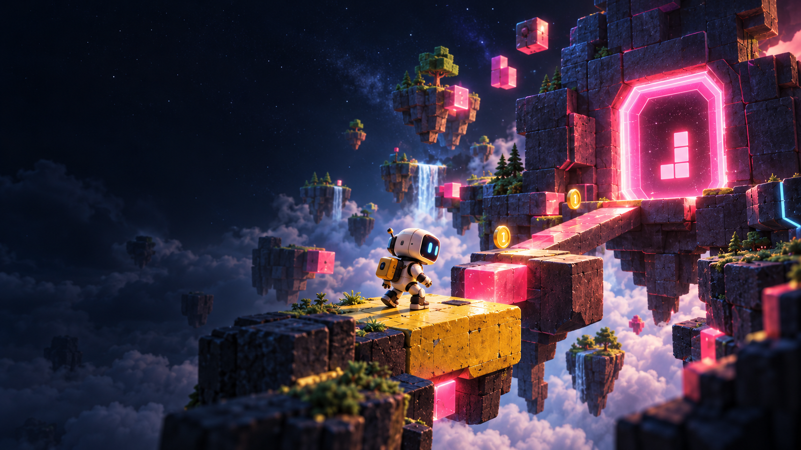
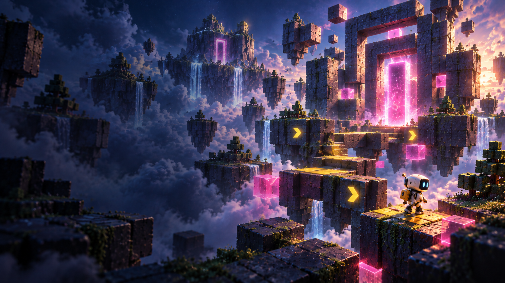
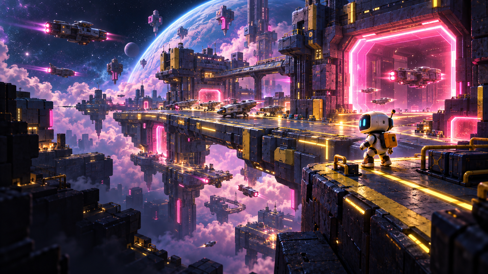

连接你的工具
准备对应版本的 Unity Editor、Unity MCP，以及已登录的 Codex 或兼容模型接口。

LEYI / UNITY AI 游戏研发工作台
IMAGINE. BUILD. PLAY.
接上你的 Unity 工程，与 AI 专家一起
拆需求、改代码、调场景，推进到可以试玩的版本。
概念场景 · 移动鼠标，感受世界
01 / MEET YOUR WORKSPACE
讨论有上下文，协作有分工，改动有依据。
在同一个工作台里，把一轮研发接起来。
可以在当前页面放大查看对话和成果。
02 / YOUR FIRST ITERATION
你决定要做什么，也决定何时完成。
乐易把中间的研发工作接起来。
你来定义
带上工程文件或场景对象，描述想让玩家获得的体验。
“暂停时，提醒玩家按 Esc 或 P 继续。”
和 AI 一起推进
先看方案、修改范围和专家分工。确认后推进实施，再审阅实际改动。
你来验收
打开构建，体验交互。满意就接受；需要调整，把试玩反馈带进下一轮。
实施前确认范围 · 改动后逐项核对 · 支持快照恢复的任务可回退

THE NEXT WORLD IS YOURS.
03 / CREATIVE DIRECTIONS
从角色操作、场景交互到界面反馈，
把宏大的想象，拆成下一步可做的任务。

把远方的星港，变成可以走进去的目的地。围绕第三人称探索，串联角色操作、关卡动线与清晰的目标反馈。
画廊画面为原创概念场景，用于表达创作方向，并非乐易已完成的游戏项目。
04 / YOUR AI CREW
玩法、代码、场景、界面与测试。
让每一份专长，都用在合适的地方。
BEFORE YOU BEGIN
适用范围、恢复方式与当前可用阶段。
READY TO BUILD?
准备好以下环境，就从一个小目标开始。
准备对应版本的 Unity Editor、Unity MCP，以及已登录的 Codex 或兼容模型接口。
在本地项目目录双击启动文件，再接入独立工程副本，或从已有模板新建工程。
打开乐易工作台.command当前自动构建支持 macOS Player；其他平台需另行准备 SDK 和设备测试。再看看工作台